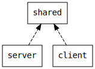

Quick start
The central idea of the endpoints library is that you first define an abstract description of your HTTP endpoints and then the library provides:
- a server implementation decoding requests and building responses,
- a client implementation building requests and decoding responses,
- a machine readable documentation (OpenAPI document).
Project layout
The typical setup consists in a multi-project build, with a client project and a server project both depending on a shared project.
The shared project contains the description of the communication protocol. The server project implements this communication protocol. The client project uses the protocol to communicate with the server.

Dependencies
The shared project has to depend on so-called algebras, which provide the vocabulary to describe the communication endpoints, and the client and server projects have to depend on interpreters, which give a concrete meaning to the endpoint descriptions. See the algebras and interpreters page for an exhaustive list.
In this example you will use the following dependencies:
val shared =
crossProject(JSPlatform, JVMPlatform).crossType(CrossType.Pure).settings(
libraryDependencies ++= Seq(
"org.julienrf" %%% "endpoints-algebra" % "0.15.0",
// optional, see explanation below
"org.julienrf" %%% "endpoints-json-schema-generic" % "0.15.0"
)
)
val sharedJS = shared.js
val sharedJVM = shared.jvm
val client =
project.enablePlugins(ScalaJSPlugin).settings(
libraryDependencies += "org.julienrf" %%% "endpoints-xhr-client" % "0.15.0"
).dependsOn(sharedJS)
val server =
project.settings(
libraryDependencies ++= Seq(
"org.julienrf" %% "endpoints-akka-http-server" % "0.15.0",
"org.scala-stm" %% "scala-stm" % "0.8"
)
).dependsOn(sharedJVM)
The shared project uses the endpoints-json-schema-generic module in addition to the required algebra interface endpoints-algebra, to define the communication endpoints and to automatically derive the JSON schemas of the entities from their Scala type definitions.
The client project uses a Scala.js web client interpreter.
Finally, the server project uses a server interpreter backed by Akka HTTP. It also uses the scala-stm library for implementing the business logic.
Description of the HTTP endpoints
In the shared project, define a CounterEndpoints trait describing two endpoints, one for getting a counter value and one for incrementing it:
import endpoints.{algebra, generic}
/**
* Defines the HTTP endpoints description of a web service implementing a counter.
* This web service has two endpoints: one for getting the current value of the counter,
* and one for incrementing it.
*/
trait CounterEndpoints
extends algebra.Endpoints
with algebra.JsonEntitiesFromSchemas
with generic.JsonSchemas {
/**
* Get the counter current value.
* Uses the HTTP verb “GET” and URL path “/current-value”.
* The response entity is a JSON document representing the counter value.
*/
val currentValue: Endpoint[Unit, Counter] =
endpoint(get(path / "current-value"), ok(jsonResponse[Counter]))
/**
* Increments the counter value.
* Uses the HTTP verb “POST” and URL path “/increment”.
* The request entity is a JSON document representing the increment to apply to the counter.
* The response entity is empty.
*/
val increment: Endpoint[Increment, Unit] =
endpoint(
post(path / "increment", jsonRequest[Increment]),
ok(emptyResponse)
)
// Generically derive the JSON schema of our `Counter`
// and `Increment` case classes defined thereafter
implicit lazy val counterSchema: JsonSchema[Counter] = genericJsonSchema
implicit lazy val incrementSchema: JsonSchema[Increment] = genericJsonSchema
}
case class Counter(value: Int)
case class Increment(step: Int)The currentValue and increment members define the endpoints for getting the counter current value or incrementing it, as their names suggest. The counterSchema and incrementSchema members define a JSON schema that will be used to serialize and deserialize the request and response entities.
Client implementation
A client implementation of the endpoints can be obtained by mixing so-called “interpreters” to the CounterEndpoints trait defined above. In this example, you want to get a JavaScript (Scala.js) client that uses XMLHttpRequest under the hood. Defines the following CounterClient object in the client project:
import endpoints.xhr
/**
* Defines an HTTP client for the endpoints described in the `CounterEndpoints` trait.
* The derived HTTP client uses XMLHttpRequest to perform requests and returns
* results in a `js.Thenable`.
*/
object CounterClient
extends CounterEndpoints
with xhr.thenable.Endpoints
with xhr.JsonEntitiesFromSchemasAnd then, the CounterClient object can be used as follows:
import scala.scalajs.js
/**
* Performs an XMLHttpRequest on the `currentValue` endpoint, and then
* deserializes the JSON response as a `Counter`.
*/
val eventuallyCounter: js.Thenable[Counter] = CounterClient.currentValue(())And also:
/**
* Serializes the `Increment` value into JSON and performs an XMLHttpRequest
* on the `increment` endpoint.
*/
val eventuallyDone: js.Thenable[Unit] = CounterClient.increment(Increment(42))As you can see, invoking an endpoint consists of calling a function on the CounterClient object. The endpoints library then builds an HTTP request (according to the endpoint description), sends it to the server, and eventually decodes the HTTP response (according to the endpoint description).
Server implementation
Similarly, a server implementation of the endpoints can be obtained by mixing the appropriate interpreters to the CounterEndpoints trait. In this example, you want to get a JVM server that uses Akka HTTP under the hood. Create the following CounterServer class in the server project:
import akka.http.scaladsl.server.Directives._
import akka.http.scaladsl.server.Route
import endpoints.akkahttp.server
import scala.concurrent.stm.Ref
/**
* Defines a Play router (and reverse router) for the endpoints described
* in the `CounterEndpoints` trait.
*/
object CounterServer
extends CounterEndpoints
with server.Endpoints
with server.JsonEntitiesFromSchemas {
/** Simple implementation of an in-memory counter */
val counter = Ref(0)
// Implements the `currentValue` endpoint
val currentValueRoute =
currentValue.implementedBy(_ => Counter(counter.single.get))
// Implements the `increment` endpoint
val incrementRoute =
increment.implementedBy(inc => counter.single += inc.step)
val routes: Route =
currentValueRoute ~ incrementRoute
}The routes value produced by the endpoints library is a Route value directly usable by Akka HTTP. The last section shows how to setup an Akka HTTP server that uses these routes.
The routes implementations provided by endpoints decode the incoming HTTP requests, call the corresponding logic (here, incrementing the counter or getting its current value), and build the HTTP responses.
Documentation generation
You can also generate documentation for the endpoints, again by mixing the appropriate interpreters. Create the following CounterDocumentation object in the server project:
import endpoints.openapi
import endpoints.openapi.model.{Info, OpenApi}
/**
* Generates OpenAPI documentation for the endpoints described in the `CounterEndpoints` trait.
*/
object CounterDocumentation
extends CounterEndpoints
with openapi.Endpoints
with openapi.JsonEntitiesFromSchemas {
val api: OpenApi =
openApi(
Info(title = "API to manipulate a counter", version = "1.0.0")
)(currentValue, increment)
}This code defines a CounterDocumentation object with an api member containing an OpenAPI object documenting the currentValue and increment endpoints.
Running the application
Finally, to run your application you need to build a proper Akka HTTP server serving your routes. Define the following Main object:
import akka.actor.ActorSystem
import akka.http.scaladsl.Http
import akka.http.scaladsl.server.Directives._
object Main extends App {
implicit val system: ActorSystem = ActorSystem("server-system")
val routes = CounterServer.routes ~ DocumentationServer.routes
Http().bindAndHandle(routes, "0.0.0.0", 8000)
}
// Additional route for serving the OpenAPI documentation
import endpoints.openapi.model.OpenApi
import endpoints.akkahttp.server
object DocumentationServer
extends server.Endpoints
with server.JsonEntitiesFromEncodersAndDecoders {
val routes =
endpoint(get(path / "documentation.json"), ok(jsonResponse[OpenApi]))
.implementedBy(_ => CounterDocumentation.api)
}You can then browse the http://localhost:8000/current-value URL to query the counter value, or the http://localhost:8000/documentation.json URL to get the generated OpenAPI documentation, which should look like the following:
{
"openapi": "3.0.0",
"info": {
"title": "API to manipulate a counter",
"version": "1.0.0"
},
"components": {
"schemas": {
"quickstart.Counter": {
"type": "object",
"properties": {
"value": {
"format": "int32",
"type": "integer"
}
},
"required": ["value"]
},
"quickstart.Increment": {
"type": "object",
"properties": {
"step": {
"format": "int32",
"type": "integer"
}
},
"required": ["step"]
},
"endpoints.Errors": {
"type": "array",
"items": {
"type": "string"
}
}
}
},
"paths": {
"/increment": {
"post": {
"requestBody": {
"content": {
"application/json": {
"schema": {
"$ref": "#/components/schemas/quickstart.Increment"
}
}
}
},
"responses": {
"400": {
"description": "Client error",
"content": {
"application/json": {
"schema": {
"$ref": "#/components/schemas/endpoints.Errors"
}
}
}
},
"500": {
"description": "Server error",
"content": {
"application/json": {
"schema": {
"$ref": "#/components/schemas/endpoints.Errors"
}
}
}
},
"200": {
"description": ""
}
}
}
},
"/current-value": {
"get": {
"responses": {
"400": {
"description": "Client error",
"content": {
"application/json": {
"schema": {
"$ref": "#/components/schemas/endpoints.Errors"
}
}
}
},
"500": {
"description": "Server error",
"content": {
"application/json": {
"schema": {
"$ref": "#/components/schemas/endpoints.Errors"
}
}
}
},
"200": {
"description": "",
"content": {
"application/json": {
"schema": {
"$ref": "#/components/schemas/quickstart.Counter"
}
}
}
}
}
}
}
}
}
Next Step
Learn about the design principles of the endpoints library.